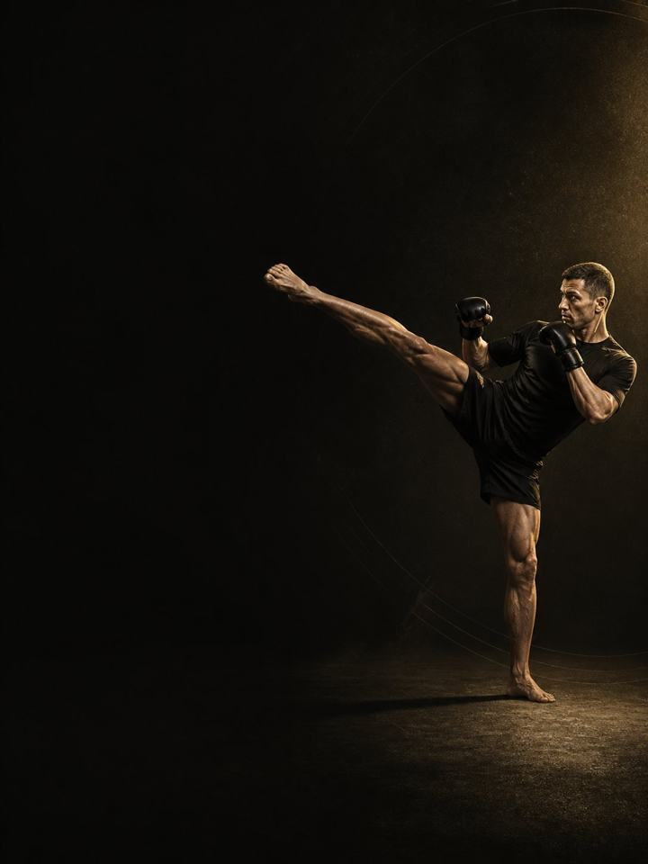

رياضات الضرب · المنافسة
حافظ على القوة والقدرة الانفجارية التي يحاول المعسكر أن يأخذها، وادخل ليلة النزال وهما معك كاملتين.
- مناسب لـلاعبي الملاكمة والمواي تاي والفنون القتالية المختلطة في المعسكر وموسم النزالات
- أيام التدريبيومان في النادي أسبوعيًا، وجلسة قصيرة واحدة في أسبوع النزال
- مدة الجلسة50–60 دقيقة
- المعداتنادٍ متكامل، مع كرة طبية وأشرطة مطاطية وبار عقلة
- الصيغةملف PDF للهاتف، وكل تمرين مرتبط بفيديو توضيحي
لمن هذا البرنامج
للاعبي رياضات الضرب في المعسكر وموسم النزالات. المعسكر هو المكان الذي تختفي فيه القوة بهدوء. يرتفع النزال التدريبي، وترتفع الجولات، ويُترك النادي، وبحلول أسبوع النزال يكون الرياضي في أعلى لياقته وأضعف قوته طوال العام. وهذه المقايضة يمكن تجنّبها.
القوة والقدرة الانفجارية تتلاشيان خلال أسابيع قليلة من التوقّف، لكن الحفاظ عليهما يكلّف جزءًا بسيطًا مما كلّفه بناؤهما: ثلاث مجموعات فعلية، وتكرارات قليلة، وأوزان حقيقية، و50–60 دقيقة، مرتين في الأسبوع. لا شيء حتى الفشل العضلي، ولا شيء يتركك متألمًا للنزال التدريبي، ولا شيء ثقيل في أسبوع النزال، ولا شيء على الإطلاق خلال 72 ساعة قبل دخولك الحلبة. وتمارين الكتفين والسمانتين والرقبة هي الشيء الوحيد الذي لا يُحذف أبدًا.
الهدف أن تحافظ، لا أن تكسب. لا تستطيع أن تصبح أقوى خلال المعسكر، ومحاولة ذلك تكلّفك من نزالك التدريبي. والفوز هو أن تصل إلى ليلة النزال بالقوة نفسها التي كانت لديك يوم بدأ المعسكر.
موقعه في السنة: الكتلة 3 من 4. الأساس، ثم البناء، ثم المنافسة، ثم الاستشفاء، بالترتيب. نفّذه طوال المعسكر وموسم نزالاتك، من يوم بداية المعسكر حتى آخر نزال.
أسبوعك
يومان في النادي، في بداية الأسبوع وبعيدًا عن النزال التدريبي الشاق.
أسبوع المعسكر، يومان في النادي
| الأحد | الاثنين | الثلاثاء | الأربعاء | الخميس | الجمعة | السبت |
|---|---|---|---|---|---|---|
| اليوم 1 | الرياضة | اليوم 2 | الرياضة | الرياضة | راحة | الرياضة |
أسبوع النزال
| الأحد | الاثنين | الثلاثاء | الأربعاء | الخميس | الجمعة | السبت |
|---|---|---|---|---|---|---|
| اليوم 1 | الرياضة | خفيف | راحة | الوزن الرسمي | النزال | راحة |
أسبوع النزال مختلف: جلسة قصيرة واحدة في بدايته، ولا شيء ثقيل قبل النزال بسبعة أيام، ولا شيء سوى الحركة خلال آخر 72 ساعة.
كل جلسة تسير بالطريقة نفسها:
- الإحماء، 8–10 دقائق. التسلسل نفسه في كل مرة، إضافة إلى الرسغين والرقبة. لا يُتخطّى أبدًا، ولا يُستعجل أبدًا.
- المرونة الارتدادية والقدرة الانفجارية، 12–15 دقيقة. بضع رميات بأقصى سرعة لإبقاء الجهاز العصبي حادًّا، مع تعافٍ كامل.
- القوة، 20–25 دقيقة. الرفعات المركّبة الثقيلة، ثلاث مجموعات فعلية لكل منها، ودائمًا مع تكرارات متبقية في الخزان.
- الكتفان والرقبة والسمانتان، 10 دقائق. في النهاية، ولا تُحذف أبدًا.
كيف تتقدّم الأسابيع الـ12
ثلاث مراحل، مدة كل منها أربعة أسابيع. فقدان اللياقة غير متوازن: القوة القصوى والقدرة الانفجارية تنخفضان بشكل ملموس خلال أسابيع قليلة من التوقّف، بينما لا يحتاج الحفاظ عليهما إلا إلى جزء صغير من العمل الذي بناهما. والشدّة هي ما يحافظ عليهما. تستطيع أن تخفّض الحجم كثيرًا وتحتفظ بكل شيء تقريبًا، لكن إذا خفّضت الحمل ورفعت أوزانًا خفيفة بتكرار، فستفقده.
والتوقيت هو النصف الآخر. الرفع الثقيل يترك الجهاز العصبي والعضلات متعبة لمدة 24 إلى 72 ساعة تقريبًا، ولهذا تقع الجلسات في بداية الأسبوع، ولا يقترب أي شيء ثقيل من الأيام الثلاثة الأخيرة. والكتفان والسمانتان والرقبة تتلقّى أشد إنهاك لها في السنة خلال المعسكر، لذلك تبقى في كل جلسة.
| الأسابيع 1–4 | الأسابيع 5–8 | الأسابيع 9–12 | |
|---|---|---|---|
| المرحلة | الحفاظ على القوة | الحفاظ على القدرة الانفجارية | ذروة الانتعاش |
| الهدف | الحفاظ على القوة القصوى خلال أسابيع المعسكر الشاقة. ستبدو سهلة مقارنة بالمعسكر. وهذا صحيح. | الحفاظ على القدرة الانفجارية خلال أشق أسابيع النزال التدريبي. الأوزان نفسها، والمجموعات نفسها، وبار أسرع. | التخلّص من التعب المتراكم قبل ليلة النزال. جلسة واحدة في أي أسبوع نزال. |
| المجموعات الفعلية أسبوعيًا | 34 | 34 | 28 |
| متوسط الجهد | جهد 6.9/10، نحو 3 تكرارات في الخزان | جهد 7.1/10، نحو 3 تكرارات في الخزان | جهد 6.1/10، نحو 4 تكرارات في الخزان |
| مرات الهبوط أسبوعيًا | 40 | 29 | 40 |
| الرميات أسبوعيًا | 28 | 28 | 28 |
المرحلة في لمحة
المجموعات التدريبية أسبوعيًا حسب ما تدرّبه. الخط المتقطع هو مستوى الجهد.
موقع هذه المرحلة في السنة التدريبية
نفّذ المراحل الأربع بالترتيب لتكتمل سنة تدريبية كاملة.
الجهد (RPE) تقييم من 1 إلى 10 لمدى صعوبة المجموعة. والتكرارات المتبقية في الخزان هي عدد التكرارات الجيدة الإضافية التي كنت تستطيع أداءها، فـ«نحو 3» تعني أنه يتبقى في الخزان 3 تكرارات.
أسابيع التخفيف: الأسبوعان 6 و12 أخف. انقلهما ليقعا بجانب نزالاتك. وموعد نزالك الفعلي أهم من أي شيء مطبوع في الخطة.
القواعد التي تجعله ينجح
- ثلاث مجموعات فعلية لكل رفعة هي الجلسة كلها. ثلاث مجموعات من خمسة تكرارات بأوزان حقيقية، مرتين في الأسبوع، تحافظ على ما منحتك إياه كتلتا الأساس والبناء.
- أبقِ الحمل، وضع سقفًا للحجم. الشدّة تحافظ على القوة، أما تكديس المجموعات فلا. والرفع الخفيف المتكرّر هو النسخة التي تتركك ضعيفًا في ليلة النزال.
- لا شيء ثقيل في أسبوع النزال. ولا شيء على الإطلاق خلال آخر 72 ساعة. العمل الثقيل يترك تعبًا يستمر من يوم إلى ثلاثة أيام. وما يظهر في ليلة النزال بُني قبل أشهر.
- لا فشل عضلي أبدًا، طوال المعسكر. كل مجموعة تنتهي وفي الخزان تكرارات متبقية. المعسكر يمنحك من التعب أكثر مما تستطيع امتصاصه.
- الكتفان والسمانتان والرقبة لا تُحذف أبدًا. تبقى في كل جلسة، في النهاية، مهما حُذف غيرها.
- استخدم رقم القفزة اختبارًا للتعب. ثلاث وثبات طويلة من الثبات في بداية اليوم 1 كل أسبوع، واحتفظ بأفضلها. إذا كانت أقل من متوسطك المتحرّك بأكثر من 10%، فخفّف ذلك اليوم: احذف تمارين القدرة الانفجارية ومجموعة واحدة من كل رفعة.
- احسب مرات الهبوط، لا المجموعات فقط. كل قفزة وحجلة ووثبة وهبوط من ارتفاع هو هبوط تدفع أوتارك ثمنه، بما في ذلك حجلات الإحماء. رميات الكرة الطبية والعَدْو وخطوات التحفّز لا تُحسب هبوطًا. أبقِ الأسبوع تحت نحو 100 مرة هبوط خلال الموسم، وتدريب رياضتك يُحسب فوق ذلك.
المصطلحات
- السنة التدريبية (الدورة الكبرى): أربع كتل بالترتيب (الأساس، والبناء، والمنافسة، والاستشفاء)، نحو 48 أسبوعًا.
- الكتلة التدريبية: 12 أسبوعًا. هذا البرنامج. تطوّر الكتلة الواحدة مجموعة واحدة من الصفات إلى مستوى محدّد.
- المرحلة (الدورة المتوسطة): 4 أسابيع. تستهدف كل منها صفة واحدة. وأربعة أسابيع اختيار لا قاعدة، فالمدة تتبع الهدف.
- الأسبوع التدريبي (الدورة الصغرى): حيث يرتفع الجهد، وتُضاف المجموعات، ويقع أسبوع التخفيف.
كيف تقيس تقدّمك
الوثب الطويل الأسبوعي هو المقياس الرئيسي. ومقياس النجاح في هذه الكتلة خط مستوٍ، لا خط صاعد.
شكل التقدّم الجيد
- الأسابيع 1–4: تبدو الجلسات سهلة جدًا مقارنة بما يفعله المعسكر بك. قاوم إضافة المجموعات. هذا الشعور هو التصميم وهو يعمل.
- الأسابيع 5–8: منتصف المعسكر هو حيث يُترك النادي وتغادر القوة بهدوء. هذه الفترة هي الأهم.
- الأسابيع 9–12: يتلاشى الجهد تدريجيًا حتى أسبوع النزال.
احترم الأسبوع
احسب كل شيء: النزالات، وتدريب رياضتك، والنادي، والنوم. القفزات المفاجئة في حمل التدريب الأسبوعي هي أكثر ما يتنبّأ بالإصابة في الرياضة غير الاحترافية. في أسبوع رياضي ثقيل، احذف جلسة نادٍ أو اختصر تمارين القدرة الانفجارية، ولا تحذف الرياضة والتعافي معًا أبدًا. احمِ 7–9 ساعات من النوم. إنه أقوى أداة أداء لديك، وأرخصها.
الأدلة العلمية
كل برنامج في المكتبة مبني على أبحاث منشورة، وقوة تلك الأبحاث مذكورة صراحةً لا ضمنًا. وحيث تكون الأدلة محدودة، تقول الصفحة ذلك.
| النتيجة | المصدر | ما لا تُظهره |
|---|---|---|
| تدريب القوة يخفض الإصابات الرياضية إلى أقل من ثلث معدلها في المجموعة الضابطة. أما الإطالة فلا تخفضها. | Lauersen, Bertelsen & Andersen, British Journal of Sports Medicine 2014. Meta-analysis of 25 randomised controlled trials, 26,610 participants. PMID 24100287 | نسبة الخطر 0.32 لتدريب القوة و0.96 للإطالة. تفاوتت التجارب كثيرًا، ولم تكن الجرعة موحّدة. |
| أي وصفة تدريب معقولة أفضل من عدم التدريب. الأحمال الأثقل تحتل المرتبة الأعلى للقوة، والمجموعات المتعددة تحتل المرتبة الأعلى لحجم العضلات. | Currier, McLeod, Banfield et al., British Journal of Sports Medicine 2023. Network meta-analysis, 178 strength and 119 hypertrophy studies. PMID 37414459 | كانت الفروق بين الوصفات صغيرة، وكلها نجحت. |
ماذا بعد
بعد 12 أسبوعًا:
- الكتلة التالية في السنة: رياضات الضرب · الاستشفاء
- منطقة واحدة تحتاج إلى عمل: السلسلة التصحيحية
قبل الشراء: احصل على موافقة طبية أولًا إذا
- كان لديك ألم في الصدر، أو ضيق تنفس غير معتاد، أو خفقان، أو دوخة أثناء المجهود.
- كان لديك ضغط دم مرتفع غير منضبط، أو مرض قلبي معروف، أو خضعت لعملية جراحية مؤخرًا.
- كنتِ حاملًا أو بعد الولادة بفترة قصيرة. احصلي على موافقة وبرنامج مخصص أولًا.
- كان لديك ألم حاد في مفصل واحد لا يهدأ. ابدأ ببرنامج أكسس التصحيحي المناسب.
هذا البرنامج إرشاد عام للياقة البدنية، ولا يغني عن التقييم الطبي.